Chapter 10. 오류 검출 및 정정(Error Detection And Correction)¶
0절. 개요
1절. 블록 부호화
2절. 순환 코드
3절. 검사합
0절. 개요¶
오류 유형¶
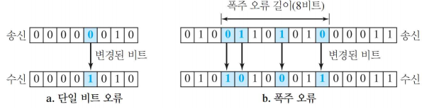
-
단일 비트 오류(Single-Bit Error)
-
데이터 단위 중 오직 하나의 비트가 오류인 경우
-
1 => 0, 0 => 1로 변경되는 오류
-
폭주 오류(Burst Error)
-
데이터 단위에서 2개 이상의 연속적 비트들이 오류인 경우
-
라우터나 스위치와 같은 장치들이 연결된 네트워크 조합
- 패킷을 호스트에서 다른 호스트로 전달하는 경우 네트워크들을 통과하는 경로 필요
Redundancy¶
- 잉여, 덧붙임
- 오류 검출 or 정정을 위해 데이터 이외 추가하는 비트
- 중복 비트들은 송신자에 의해 더해짐
- 수신자 입장에서 제거
- 중복 비트들로 수신자는 오류 검출 및 정정 가능
오류 검출(Error Detection)¶
- 오류 여부 확인
- 오류를 정정하지는 않음
- 오류가 몇 개인지 알 필요 없음
오류 정정(Error Correction)¶
- 정확히 몇 비트가 잘못되었는지 알아야 함
- 어디에서 오류가 발생했는지 알아내는 것
- 당연하게 오류 검출보다 어려움
전진 오류 정정(Forward Error Correction)¶
- 수신자가 메시지 중복 비트로 메시지를 추측하는 과정
재전송(Retransmission)¶
- 오류 발생 검출 후 송신자에게 재전송을 요청하는 과정
부호화(Coding)¶
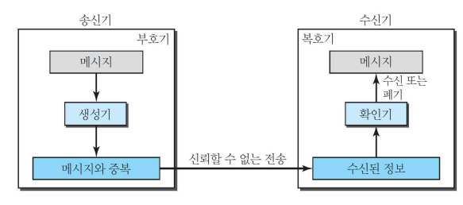
- 블록 부호화(Block Coding)
- 컨볼루션 부호화(Convolution Coding)
모듈러 연산(Modular Arithmetic)¶
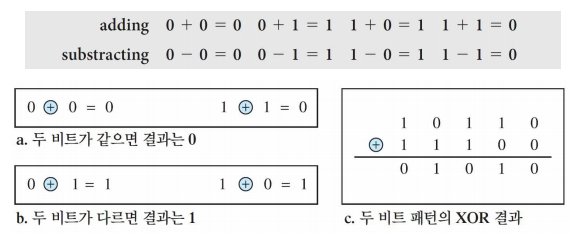
- 모듈러(modulus) N 이라는 제한된 정수 사용
- 0 ~ N - 1 정수 사용
- ex) 모듈러 2 연산
- 0과 1 두 정수만 사용
1절. 블록 부호화¶
블록 부호화(Block Coding)¶
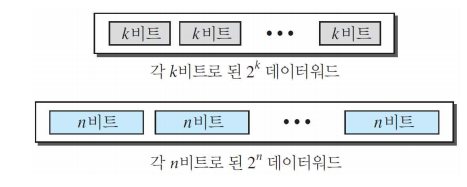
- 메시지를 데이터워드(DataWord)라는 k 비트 블록으로 나눔
- 각 블록에 r 개의 중복 비트들을 더해 길이 n = k + r로 만듦
- n 비트 블록 : 코드워드(codeword)
오류 검출 조건¶
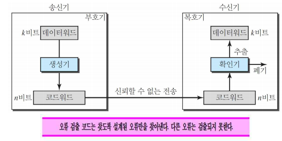
- 수신자는 유효 코드워드를 찾을 수 있거나 목록을 가지고 있어야 한다.
- 원래의 코드워드가 무효 코드워드로 바뀌었다.
오류 정정¶
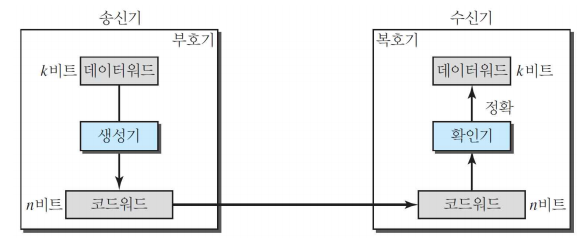
- 오류 검출보다 어려운 단계
- 많은 중복 비트 필요
해밍 거리(Hamming Distance) : 오류 제어¶
- 두 워드 사이 해밍 거리는 서로 다른 해당 비트의 개수
- 두 워드 x와 y 사이의 해밍 거리 : d(x, y)로 표시
- 두 워드에 XOR 연산 후 얻은 결과 값의 1 개수
해밍 거리(Hamming Distance) : 오류 제어 예시¶
-
d(000, 011)
-
해밍 거리는 2이다.
-
000과 011의 XOR 연산의 경우 011이고 이는 2개의 1을 가지기 때문이다.
-
d(10101, 11110)
-
해밍 거리는 3이다.
- 10101과 11110의 XOR 연산의 경우 01011이고 이는 3개의 1을 가지기 때문이다.
해밍 거리(Hamming Distance) : 오류 검출¶
- 모든 가능한 코드워드 쌍 사이의 가장 작은 해밍 거리
- s개 까지의 오류가 발생해도 오류가 생긴 것을 알아내기 위해 블록코드의 최소 해밍 거리는 \(d_{min}=s+1\)
선형 블록 코드(Linear Block Codes)¶
- 최근 대부분의 블록 코드는 선형 블록 코드 중 하나
- 임의의 두 유효 코드워드에 XOR 연산 후 다른 유효 코드 생성
- 비선형 블록 코드는 오류 검출이나 정정에 사용하지 않음
- 구조가 이론적으로 복잡하고 구현하기 힘들기 때문
- 선형 블록 코드 최소 거리
- 최소 해밍 거리는 0이 아닌 가장 적은 수의 1을 가진 코드워드의 1의 개수
패리티(Parity) 검사 코드¶
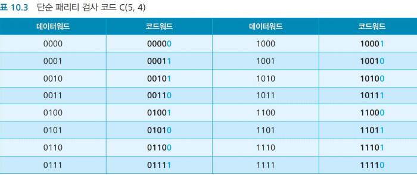
- 변환을 위해 추가된 비트
- k 비트 데이터워드를 n = k + 1이 되도록 n비트 코드워드로 변환
- \(d_{min} = 2\)
- 단일 비트 오류 검출 코드
- 홀수 개의 오류 검출 가능
패리티 검사 코드 부호기와 복호기¶
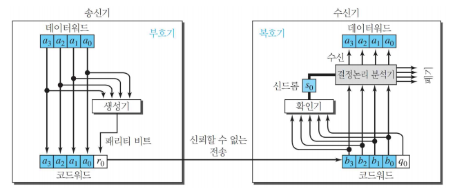
오류가 있는 코드워드는?¶
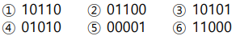
- 홀수 개가 아닌 2, 4, 6에 오류가 있음
2차원 패리티 검사(2-Dimensional Parity Check)¶
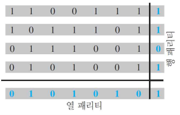
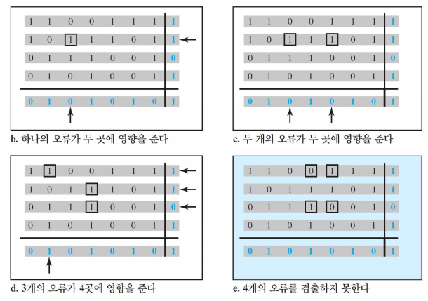
2절. 순환 코드¶
순환 코드(Cyclic Code)¶
- 하나의 특별한 성질을 가진 선형 블록 코드
- 코드워드 순환 시 다른 코드워드 획득
순환 코드 예시¶
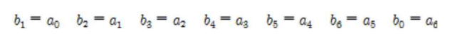
- 1011000이 코드워드인 경우
- 1 개의 비트를 왼쪽으로 이동시켜 얻는 0110001도 코드워드인 형태
순환 중복 검사(CRC : Cyclic Redundancy Check)¶
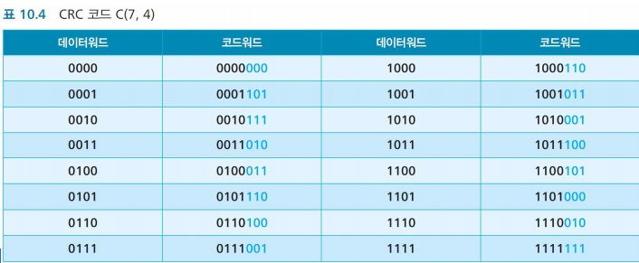
- 오류 정정을 위한 순환 코드 생성
- LAN, WAN에서 주로 사용
순환 중복 검사 부호기와 복호기¶
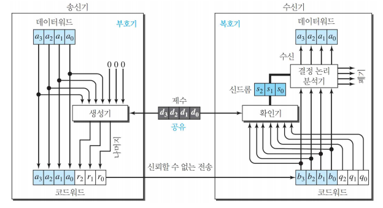
순환 중복 검사 부호기 : 나눗셈¶
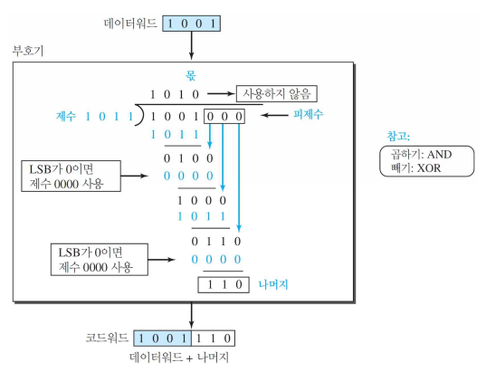
순환 중복 검사 복호기 : 나눗셈¶
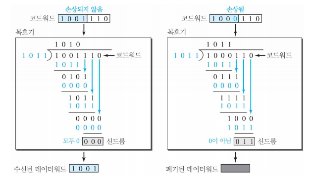
다항식(Polynomial)¶
- 0과 1의 패턴은 계수 0과 1의 다항식으로 표현
지수¶
- 각 비트의 자리 수
계수¶
- 비트값
차수¶
- 다항식 최고 지수
- ex) \(x^6 + x^4 + x^2\) 의 차수는 6
덧셈과 뺄셈¶
- 모듈러 2 연산
- 덧셈의 결과 == 뺄셈의 결과
- 항목을 합해 같은 차수의 항목만 남고 제거하는 것
- ex) \(x^5 + x^4 + x^2\) 와 \(x^6 + x^4 + x^2\) 을 더할 경우 \(x^6 + x^5\) 만 남고 항목 \(x^4\) 와 \(x^2\) 는 제거
곱셈과 나눗셈¶
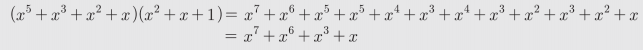
- 곱셈 : 지수의 합
- 나눗셈 : (첫 번째 항목의 지수) - (두 번째 항목의 지수)
이동¶
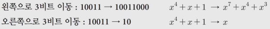
- 왼쪽 이동 : 오른쪽 비트에 0 더하기
- 오른쪽 이동 : 오른쪽 비트 제거
2진 워드 다항식¶
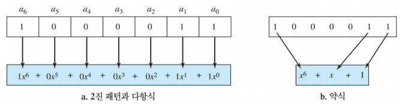
CRC 나눗셈¶
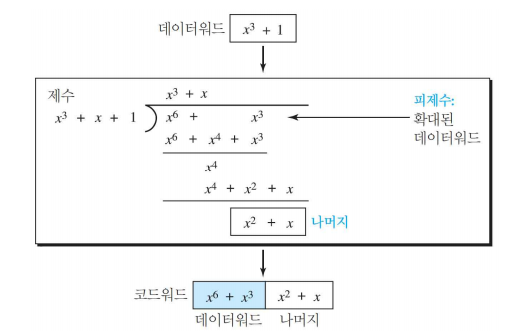
- 제수
- 생성 다항식 or 생성식
표준 다항식¶
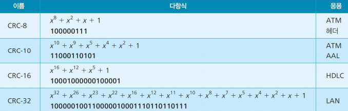
순환 코드 장점¶
- 단일 비트, 2비트, 홀수 개의 비트, 폭주 오류 검출 시 우수한 성능
- 하드웨어 및 소프트웨어의 쉬운 구현
- 특히 하드웨어 구현 시 매우 빠른 속도 : 다수의 네트워크에서 사용
3절. 검사합¶
검사합(CheckSum)¶
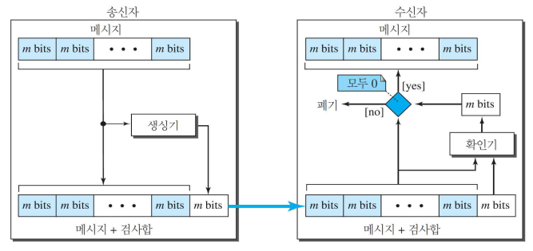
- 모든 길이 메시지에 적용 가능한 오류 검출 기법
- 네트워크 계층, 전송 계층에서 사용
생성기(Generator)¶
- 별도의 m 비트 단위 생성
확인기(Checker)¶
- 전송된 검사합을 통해 새로운 검사합 생성
- 새로운 검사합
- 모두 0 인 경우 : 메시지 승인
- 그렇지 않은 경우 : 메시지 폐기
1의 보수(1's Complement) 덧셈 연산¶
- 검사합에서 합을 제공받을 경우 단점 보완
- 검사합을 제외한 모든 데이터는 4비트 워드(15보다 작은 수)
- 만약, 검사합이 15보다 큰 경우 데이터를 전송할 방법이 없음
- 0과 \(2^m-1\) 사이의 부호 없는 수를 m 비트 사용해 표시
- 수가 m 비트보다 많으면 왼편의 남는 비트들은 m개의 오른편 비트들에 더함
- 즉, 보수의 합인 검사합을 전송할 경우 수신자의 작업이 쉬워짐
검사합 절차¶
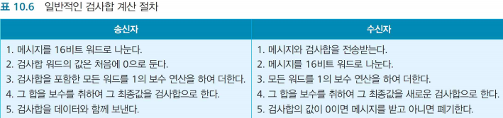
검사합 알고리즘¶
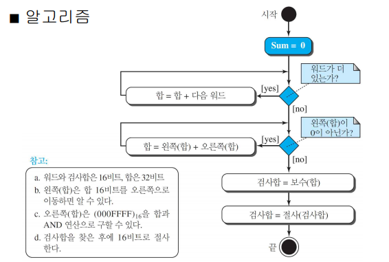
검사합 예제 : Forouzan¶
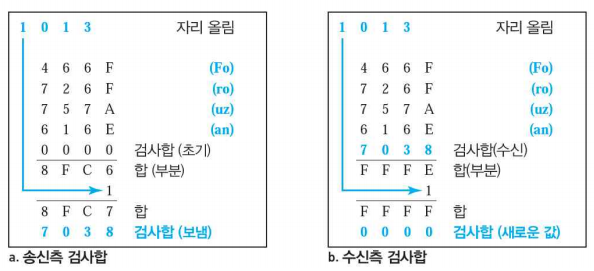